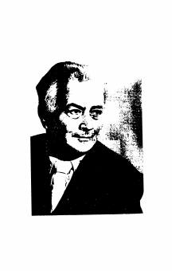

SAbdulla Qahhorning o'tkir ruhdagi mashhur romani.
Abdulla Qahhorning ushbu mashhur romanida o'tgan asrning murakkab ijtimoiy-siyosiy muhiti, ziyolilar shakllanishi jarayoni va inson taqdiri mahorat bilan ochib berilgan. Asar voqealari va qahramonlarning ichki kechinmalari o'quvchini chuqur o'ylantiradi. Kitob o'zbek adabiyotining yorqin namunalaridan biri hisoblanadi.